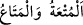

çok lütufkârdır ve her şeyden haberi olandır.
Kâşifî şöyle demiştir: “Siyer yazarlarının kaydettiğine göre, hicretin dokuzuncu yılı
Âlemin Efendisi (a.s.) hanımlarından uzlet edip uzaklaştı ve bir ay onların yanına
gitmeyeceğine yemin etti. Bunun sebebi, hanımlarının ondan elbiseler, süs eşyaları ve
fazla nafaka istemeleri idi. Hanımları kıskançlık yüzünden onu incitmişlerdi. Zaten bu
kuma kadınların âdetidir. Fahr-i âlem üzüldü, mahzûn oldu, mescidde kendisine âid olan
bir odaya gitti. Aradan yirmi dokuz gün geçip o ay tamamlandıktan sonra Cebrâil (a.s.)
Efendimiz (a.s.)’ın eşlerini boşanma ya da Allah ve Rasûlü’nü tercih etme arasında
muhayyer bırakan şu âyeti getirdi:”
Rahman olan Allah’tan haber veren, ey şânı yüce “Peygamber! Eşlerine” hanımlarına
“şöyle söyle!” “Söyle” emri, onları muhayyer bırakma konusunda vücûb ifâde eden bir
emirdir. Bu, Hz. Peygamber (a.s.)’a özel hallerdendir.
O zaman Peygamberimiz (a.s.)’ın dokuz hanımı vardı. Onların beşi; Âişe bint Ebû
Bekir, Hafsa bint Ömer, ismi Ramle bint Ebû Süfyân olan Ümmü Habîbe, ismi Hind
bint Ebû Ümeyye el-Mahzûmiyye olan Ümmü Seleme ve Sevde bint Zem‘a el-Âmiriyye
Kureyş’tendi. Dördü; Zeyneb bint Cahş el-Esediyye, Meymûne bint Hâris el-Hilâliyye,
Safiyye bint Huyey b. Ahtab el-Hayberiyye el-Hârûniyye ve Cüveyriye bint Hâris el-
Huzâiyye el-Mustalıkıyye ise Kureyş’ten başka kabiledendi. Bu hanımların hepsi Hz.
Hatice’nin vefatından sonra Rasûlullah (s.a.)’in eşleri olmuşlardır.
“Eğer dünyâ dirliğini” yâni dünyânın bolluk ve nîmetini “ve süsünü” meselâ
övünülecek elbiseler ve abartılı ziynetleri “istiyorsanız, gelin size” mehirden başka
boşanan kadınlara verildiği gibi “boşanma bedellerinizi vereyim de, sizi güzellikle”
zarar verme ve bid’at olmayan bir talâk ile “salıvereyim” yâni boşayayım.
“
” kelimesinin aslı, bu sözü yüksek bir yerde olanın aşağıda olana söylemesidir.
Sonra kullanımı çoğalıp kullanımında bütün mekanlar eşit hale geldi. Bu âyette
Peygamberimiz (a.s.) eşlerinin gerçekten kendisine yönelmelerini ve gelmelerini
istememiştir. Bilakis: “Ey hanımlar! Benim size arz ettiğim şeye cevap verin. Kendi
irâde ve tercîhinizle size arz edilen bu iki durumdan birine yönelin” mânâsını
kasdetmiştir. Nitekim “Yönelip gelmiş benimle konuşuyor, gitmiş beni çekiştiriyor,
kalkmış beni tehdid ediyor” denildiği gibi.
“
”ın asıl anlamı, kalıcı olmayan ve kısa zamanda sona eren kendisinden az
faydalanılan nesne demektir. Bu yüzden lezzet almaya “
” denir. Boşanma bedeli
(müt‘a), bedeni örten bir gömlek, evden çıktığı zaman kadının tüm vücudunu örten bir
elbise ve başörtüsüdür. Ebû Hanife’ye göre gerdeğe girmeden boşanan ve nikah akdi
sırasında mehri belirlenmeyen hanım için boşanma bedeli verilmesi vâcibdir. Diğer
şekillerde boşanan hanımlar için verilmesi ise müstehabdır. Boşanma bedeli (müt‘a)
verilmesinin vâcib olmasındaki hikmet ise boşama ile kadında meydana gelen yalnızlığı